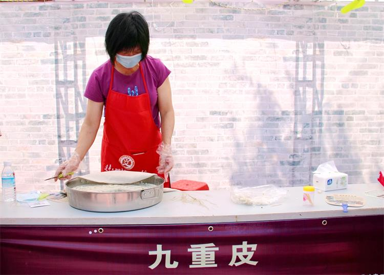

A TASTE OF LIANPING
广东 · 河源 · 连平
尝一口连平
一颗桃、一层米皮、一朵香菇。
从食物出发，慢慢认识这片地方。
01 · 鹰嘴蜜桃
先认识这颗桃
点击图上的三个标记，看看它有什么特点。

名字藏在果形里
鹰嘴蜜桃的果顶微微尖翘，形似鹰嘴。 看桃子时，不妨先留意这个有辨识度的小细节。
照片为枝头生长的连平鹰嘴蜜桃（连平县上坪镇桃园）。
02 · 九重皮
一层一层，叠出风味
点击“蒸一层”，看看九重皮怎样逐渐成形。
蒸熟一层，
再添一层米浆。
九重皮是连平特色传统小吃。 米浆逐层蒸熟，反复叠加， 最后一层可撒上香菇末、虾米、葱花等配料。

九重皮蒸制场景，摄于连平街头摊位。
点击按钮，从第一层开始。
九层叠好了。
这份简化侧面示意让层次更容易被看见。 真实制作还涉及米浆调制、火候和蒸制时间， 不能仅凭点击次数还原。
此处是理解逐层蒸制的简化体验， 不是实际烹饪教程；各家配方可能有所不同。
03 · 连平香菇
翻开一张风味卡
点击卡片查看内容，再点一次返回正面。
河源市政府的连平概况将香菇列为当地土特产。 从这一份食材出发，我们还可以继续了解它的产地、 制作与餐桌故事。
卡片照片为干香菇特写。